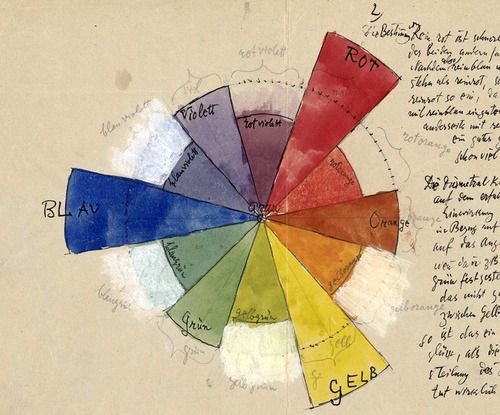
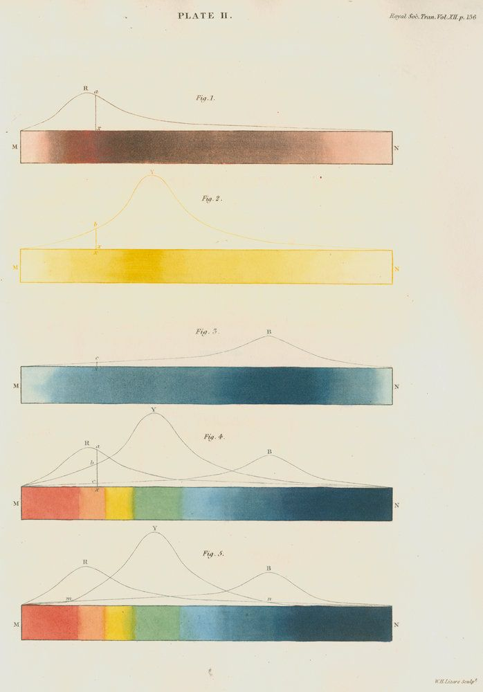
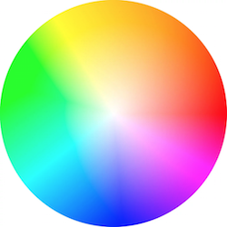

Index

Colors
We haven't much of a chance to talk about GLSL vector types. Before going further it's important to learn more about these variables and the subject of colors is a great way to find out more about them.
If you are familiar with object oriented programming paradigms you've probably noticed that we have been accessing the data inside the vectors like any regular C-like struct.
vec3 red = vec3(1.0,0.0,0.0);
red.x = 1.0;
red.y = 0.0;
red.z = 0.0;
Defining color using an x, y and z notation can be confusing and misleading, right? That's why there are other ways to access this same information, but with different names. The values of .x, .y and .z can also be called .r, .g and .b, and .s, .t and .p. (.s, .t and .p are usually used for spatial coordinates of a texture, which we'll see in a later chapter.) You can also access the data in a vector by using the index position, [0], [1] and [2].
The following lines show all the ways to access the same data:
vec4 vector;
vector[0] = vector.r = vector.x = vector.s;
vector[1] = vector.g = vector.y = vector.t;
vector[2] = vector.b = vector.z = vector.p;
vector[3] = vector.a = vector.w = vector.q;
These different ways of pointing to the variables inside a vector are just nomenclatures designed to help you write clear code. This flexibility embedded in shading language is a door for you to start thinking interchangeably about color and space coordinates.
Another great feature of vector types in GLSL is that the properties can be combined in any order you want, which makes it easy to cast and mix values. This ability is called swizzle.
vec3 yellow, magenta, green;
// Making Yellow
yellow.rg = vec2(1.0); // Assigning 1. to red and green channels
yellow[2] = 0.0; // Assigning 0. to blue channel
// Making Magenta
magenta = yellow.rbg; // Assign the channels with green and blue swapped
// Making Green
green.rgb = yellow.bgb; // Assign the blue channel of Yellow (0) to red and blue channels
Mixing color
Now that you know how colors are defined, it's time to integrate this with our previous knowledge. In GLSL there is a very useful function, mix(), that lets you mix two values in percentages. Can you guess what the percentage range is? Yes, values between 0.0 and 1.0! Which is perfect for you, after those long hours practicing your karate moves with the fence - it is time to use them!

Check the following code at line 18 and see how we are using the absolute values of a sin wave over time to mix colorA and colorB.
Show off your skills by:
- Make an expressive transition between colors. Think of a particular emotion. What color seems most representative of it? How does it appear? How does it fade away? Think of another emotion and the matching color for it. Change the beginning and ending color of the above code to match those emotions. Then animate the transition using shaping functions. Robert Penner developed a series of popular shaping functions for computer animation known as easing functions, you can use this example as research and inspiration but the best result will come from making your own transitions.
Playing with gradients
The mix() function has more to offer. Instead of a single float, we can pass a variable type that matches the two first arguments, in our case a vec3. By doing that we gain control over the mixing percentages of each individual color channel, r, g and b.

Take a look at the following example. Like the examples in the previous chapter, we are hooking the transition to the normalized x coordinate and visualizing it with a line. Right now all the channels go along the same line.
Now, uncomment line number 25 and watch what happens. Then try uncommenting lines 26 and 27. Remember that the lines visualize the amount of colorA and colorB to mix per channel.
You probably recognize the three shaping functions we are using on lines 25 to 27. Play with them! It's time for you to explore and show off your skills from the previous chapter and make interesting gradients. Try the following exercises:
-
Compose a gradient that resembles a William Turner sunset
-
Animate a transition between a sunrise and sunset using
u_time. -
Can you make a rainbow using what we have learned so far?
-
Use the
step()function to create a colorful flag.
HSB
We can't talk about color without speaking about color space. As you probably know there are different ways to organize color besides by red, green and blue channels.
HSB stands for Hue, Saturation and Brightness (or Value) and is a more intuitive and useful organization of colors. Take a moment to read the rgb2hsv() and hsv2rgb() functions in the following code.
By mapping the position on the x axis to the Hue and the position on the y axis to the Brightness, we obtain a nice spectrum of visible colors. This spatial distribution of color can be very handy; it's more intuitive to pick a color with HSB than with RGB.
HSB in polar coordinates
HSB was originally designed to be represented in polar coordinates (based on the angle and radius) instead of cartesian coordinates (based on x and y). To map our HSB function to polar coordinates we need to obtain the angle and distance from the center of the billboard to the pixel coordinate. For that we will use the length() function and atan(y,x) (which is the GLSL version of the commonly used atan2(y,x)).
When using vector and trigonometric functions, vec2, vec3 and vec4 are treated as vectors even when they represent colors. We will start treating colors and vectors similarly, in fact you will come to find this conceptual flexibility very empowering.
Note: If you were wondering, there are more geometric functions besides length like: distance(), dot(), cross, normalize(), faceforward(), reflect() and refract(). Also GLSL has special vector relational functions such as: lessThan(), lessThanEqual(), greaterThan(), greaterThanEqual(), equal() and notEqual().
Once we obtain the angle and length we need to “normalize” their values to the range between 0.0 to 1.0. On line 27, atan(y,x) will return an angle in radians between -PI and PI (-3.14 to 3.14), so we need to divide this number by TWO_PI (defined at the top of the code) to get values between -0.5 to 0.5, which by simple addition we change to the desired range of 0.0 to 1.0. The radius will return a maximum of 0.5 (because we are calculating the distance from the center of the viewport) so we need to double this range (by multiplying by two) to get a maximum of 1.0.
As you can see, our game here is all about transforming and mapping ranges to the 0.0 to 1.0 that we like.
Try the following exercises:
-
Modify the polar example to get a spinning color wheel, just like the waiting mouse icon.
-
Use a shaping function together with the conversion function from HSB to RGB to expand a particular hue value and shrink the rest.

- If you look closely at the color wheel used on color pickers (see the image below), they use a different spectrum according to RYB color space. For example, the opposite color of red should be green, but in our example it is cyan. Can you find a way to fix that in order to look exactly like the following image? [Hint: this is a great moment to use shaping functions.]

- Read Josef Albers' book Interaction of Color and use the following shaders examples as practice.
Note about functions and arguments
Before jumping to the next chapter let’s stop and rewind. Go back and take look at the functions in previous examples. You will notice in before the type of the arguments. This is a qualifier and in this case it specifies that the variable is read only. In future examples we will see that it is also possible to define arguments as out or inout. This last one, inout, is conceptually similar to passing an argument by reference which will give us the possibility to modify a passed variable.
int newFunction(in vec4 aVec4, // read-only
out vec3 aVec3, // write-only
inout int aInt); // read-write
You may not believe it but now we have all the elements to make cool drawings. In the next chapter we will learn how to combine all our tricks to make geometric forms by blending the space. Yep... blending the space.
For your toolbox
- LYGIA's color shader functions are set of reusable functions to manipulate colors in GLSL. It includes functions to convert between color spaces, to blend colors, to create gradients, and to apply color transformations. It's very granular library, designed for reusability, performance and flexibility. And it can be easily be added to any projects and frameworks.